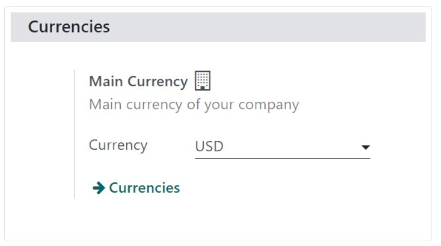
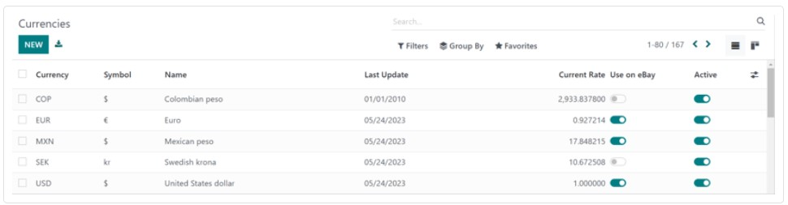
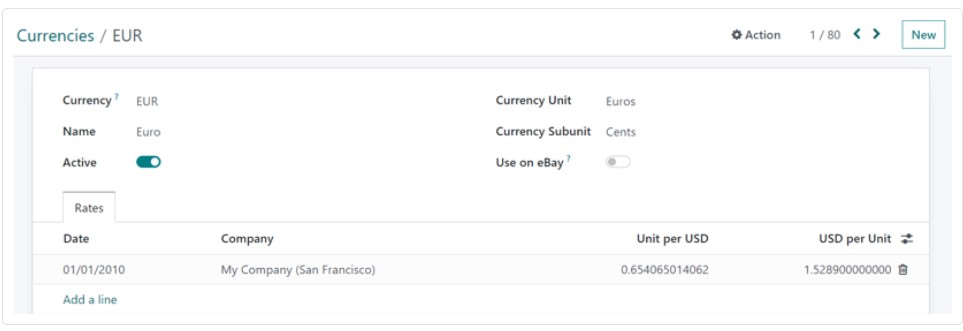
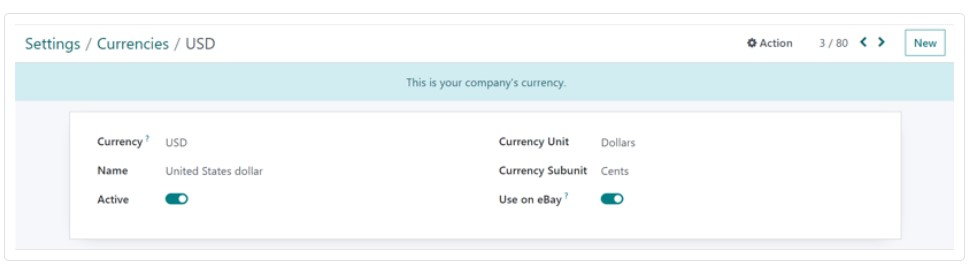
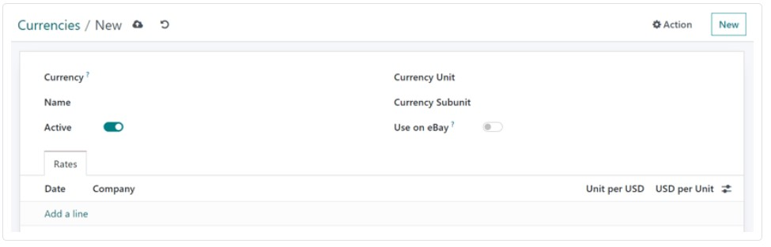
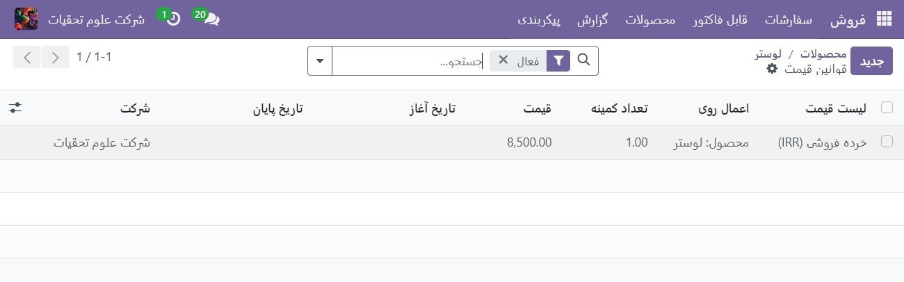

ارزهای خارجی¶
با Odoo می توان از لیست قیمت ها برای مدیریت قیمت ها در تعدادی از ارزهای خارجی استفاده کرد. به طور خاص، Odoo توانایی کار با 167 واحد پولی را دارد.
Note
برای استفاده از چندین ارز در فروش Odoo، برنامه حسابداری باید نصب شده باشد.
تنظیمات¶
پس از نصب برنامه حسابداری، ارزهای خارجی را می توان به پایگاه داده اضافه کرد. به برنامه حسابداری ‣ پیکربندی ‣ تنظیمات بروید، به بخش ارزها بروید و تنظیمات ارز اصلی را پیدا کنید.
Odoo به طور خودکار ارز اصلی را به عنوان واحد پول کشوری که شرکت در آن مستقر است تعیین می کند.
برای تغییر ارز اصلی شرکت، منوی کشویی را در قسمت ارز انتخاب کنید، ارز مورد نظر را انتخاب کنید و حتما تغییرات را ذخیره کنید.
Tip
برای اطمینان از بهروزرسانی خودکار نرخ ارز، ویژگی نرخ خودکار ارز را در صفحه تنظیمات حسابداری فعال کنید (برنامه حسابداری ‣ پیکربندی ‣ تنظیمات ‣ بخش ارزها).
روی کادر تأیید کنار ویژگی نرخ ارز خودکار کلیک کنید، یک بانک تعیینشده را برای دریافت نرخ ارز از منوی کشویی فیلد خدمات انتخاب کنید، و یک فاصله زمانی برای انجام بهروزرسانیها انتخاب کنید. سپس تعیین کنید که تاریخ اجرای بعدی چه زمانی باید باشد. برای بهروزرسانی فوری نرخ ارز، روی نماد 🔁 (فلشهای دایرهای) که در سمت راست قسمت اجرای بعدی قرار دارد، کلیک کنید.
هنگامی که تمام تنظیمات کامل شد، مطمئن شوید که همه تغییرات را ذخیره کنید.
Note
اگر ارز شرکت تنظیم نشده باشد، همه روشهای پرداخت باید به واحد پول روزنامه فروش یا واحد پول شرکت باشد. اگر یکسان نباشد، یک پیغام خطای اعتبارسنجی ظاهر می شود
مشاهده، ویرایش و افزودن ارزها¶
برای مشاهده، ویرایش، و افزودن ارزها به پایگاه داده، در دسترس قرار دادن آنها در لیست قیمت ها و در منوی کشویی اصلی ارز، روی پیوند ارزها که در زیر فیلد ارز در صفحه تنظیمات ‣ برنامه حسابداری قرار دارد، کلیک کنید.
هنگامی که پیوند ارزها کلیک می شود، یک صفحه ارز جداگانه نشان داده می شود.
در این صفحه، Odoo فهرست اصلی 167 ارز جهانی را ارائه می دهد. هر ردیف ارز، نماد، نام، تاریخ آخرین بهروزرسانی و نرخ فعلی (در مقایسه با واحد پول پیشفرض کشوری که شرکت در آن مستقر است) مربوطه را نشان میدهد.
در سمت راست، دو ستون وجود دارد که می توان آنها را روشن یا خاموش کرد:
استفاده در eBay: این ارز را می توان با حساب eBay متصل (در صورت وجود) استفاده کرد.
فعال: این ارز فعال می شود، یعنی در صورت تمایل می توان آن را به لیست قیمت اضافه کرد یا به عنوان ارز اصلی شرکت استفاده کرد (از طریق برنامه حسابداری ‣ پیکربندی ‣ تنظیمات ‣ بخش ارزها).
Tip
به طور پیش فرض، تمام گزینه های ارز فعال در بالای لیست قرار دارند.
Note
توصیه می شود حداقل یک لیست قیمت برای هر ارز فعال ایجاد شود. برای کسب اطلاعات بیشتر در مورد پیکربندی لیست قیمت، به لیست قیمت ها، تخفیف ها و فرمول ها مراجعه کنید.
برای روشن/خاموش کردن گزینهها، روی کلید جابجایی در ردیف ستون مربوطه کلیک کنید. وقتی روشن است رنگ سوئیچ سبز است. هنگامی که خاموش است، رنگ سوئیچ خاکستری است.
فرم جزئیات ارز¶
برای ویرایش هر واحد پولی در صفحه ارزها، روی واحد پول مورد نظر کلیک کنید تا فرم جزئیات آن واحد پول مشخص شود و تغییرات لازم را انجام دهید.
در فرم جزئیات ارز، کد ارز مربوطه در قسمت ارز ظاهر می شود. در زیر آن، نام ارز در قسمت نام قرار دارد.
سپس، در دسترس بودن ارز را با کلید فعال تغییر دهید: روشن با یک سوئیچ سبز و خاموش با یک سوئیچ خاکستری نشان داده شده است.
در سمت راست فرم جزئیات ارز، واحد ارز مناسب (به عنوان مثال دلار) و واحد ارز فرعی (به عنوان مثال سنت) قابل مشاهده است.
اگر قرار است ارز برای اهداف eBay استفاده شود، گزینه Use on eBay را روی فعال سازی مورد نظر تغییر دهید.
در مرحله بعد، در زیر تب نرخ ها، نرخ های مختلف تبدیل را می توان مشاهده، اضافه یا حذف کرد. هر ردیف تاریخ آن نرخ خاص، شرکتی که به آن متصل است، و به دنبال آن واحد در هر… و … در هر واحد را نشان میدهد.
Note
… در هر یک از دو ستون آخر نشان دهنده ارز اصلی مجموعه برای شرکت است. به عنوان مثال، اگر واحد پول اصلی روی USD تنظیم شده باشد، عنوان ستون ها Unit per USD و USD per Unit است. برای افزودن نرخ جدید، روی افزودن یک سطر در تب Rates کلیک کنید و اطلاعات لازم را در ستون های فوق تکمیل کنید.
فرم جزئیات ارز اصلی¶
اگر ارز انتخابی واحد پول اصلی شرکت باشد، یک بنر آبی رنگ در بالای فرم جزئیات ارز با این پیام ظاهر می شود: این واحد پول شرکت شما است.
همه فیلدها مانند فرم جزئیات ارز معمولی هستند، اما برگه نرخها وجود نخواهد داشت زیرا همه نرخهای ارز دیگر بر اساس ارز اصلی شرکت هستند.
See also
ارز جدید ایجاد کنید¶
اگر ارز مورد نظر در صفحه ارزها وجود ندارد، روی دکمه جدید کلیک کنید تا یک فرم قالب ارز خالی باز شود.
در فرم خالی جزئیات ارز، کد ارز مورد نظر را در قسمت ارز وارد کنید. در زیر آن، نام ارز را در قسمت Name وارد کنید.
سپس، در دسترس بودن ارز را با سوئیچ فعال فعال تغییر دهید.
در سمت راست فرم جزئیات ارز، واحد ارز مناسب (به عنوان مثال دلار) و واحد واحد ارز مناسب (به عنوان مثال سنت) را وارد کنید.
اگر قرار است ارز برای مقاصد eBay استفاده شود، گزینه Use on eBay را به فعال سازی مورد نظر تغییر دهید.
سپس، در زیر برگه نرخها، با کلیک روی افزودن یک خط، یک نرخ جدید اضافه کنید. سپس، به تأیید و تنظیم فیلدهای تاریخ، شرکت، واحد در هر… و … در هر واحد ادامه دهید تا مطمئن شوید که تمام اطلاعات تکمیلشده خودکار دقیق هستند.
Tip
… در هر یک از دو ستون آخر نشان دهنده ارز اصلی مجموعه برای شرکت است. به عنوان مثال، اگر واحد پول اصلی روی USD تنظیم شده باشد، عنوان ستون ها Unit per USD و USD per Unit است.
لیست قیمت های ویژه ارز¶
توصیه می شود حداقل یک لیست قیمت به ازای هر ارز فعال در پایگاه داده ایجاد شود. برای ایجاد (یا اختصاص) یک لیست قیمت به یک ارز خاص، با پیمایش به برنامه فروش ‣ محصولات ‣ لیست قیمت ها شروع کنید.
از صفحه لیست قیمت، یا یک لیست قیمت موجود را برای ویرایش انتخاب کنید، یا برای ایجاد یک لیست قیمت جدید، روی جدید کلیک کنید. در فرم جزئیات لیست قیمت، برای یک لیست قیمت جدید یا موجود، قسمت ارز را به دلخواه تنظیم کنید
تبدیل خودکار از قیمت عمومی¶
لازم به ذکر است که قیمت عمومی مشاهده شده در محصولات مستقیماً با ارز اصلی شرکت تعیین شده مرتبط است که با رفتن به برنامه حسابداری ‣ پیکربندی ‣ تنظیمات ‣ بخش ارزها ‣ ارز اصلی ‣ منوی کشویی ارز پیکربندی می شود.
اگر لیست قیمت به لیست قیمت متفاوتی که ارز متفاوتی نسبت به ارز اصلی شرکت دارد، قیمت فروش به طور خودکار به روز می شود. تغییر در قیمت به طور مستقیم با نرخ تبدیل به روز شده برای آن ارز مرتبط است.
قیمت محصولات را تعیین کنید¶
برای اینکه قیمت محصولات را تنظیم کنید تا از هرگونه تغییر در نرخ ارز جلوگیری کنید، با رفتن به برنامه فروش ‣ محصولات ‣ محصولات شروع کنید.
از صفحه محصولات، محصول مورد نظر را برای اصلاح انتخاب کنید. یا با کلیک بر روی دکمه جدید یک محصول جدید ایجاد کنید.
سپس، در فرم جزئیات محصول، روی دکمه هوشمند Extra Prices، واقع در گوشه سمت چپ بالا کلیک کنید. با انجام این کار، یک صفحه قوانین قیمت جداگانه، مخصوص آن محصول خاص، نشان داده می شود.
روی جدید کلیک کنید و لیست قیمت مورد نظر را از منوی کشویی در ستون لیست قیمت انتخاب کنید.
فیلد اعمال روی به صورت خودکار با محصول پر می شود، بنابراین برای وارد کردن ارقام مورد نظر در تعداد کمیت اقدام کنید. فیلدهای مقدار و قیمت
Note
رقم در تعداد کمیت فیلد مقدار به این معنی است که قیمت تعیین شده تنها در صورتی فعال می شود که حداقل آن مقدار محصول خریداری شود.
در صورت لزوم، تاریخ شروع و تاریخ پایان را برای قیمت های تعیین شده پیکربندی کنید. خالی گذاشتن این ستون ها تضمین می کند که قیمت تعیین شده بدون توجه به تاریخ فروش معتبر باقی می ماند.
اگر در یک محیط چند شرکتی کار می کنید، تعیین کنید که این قانون قیمت در قسمت شرکت برای کدام شرکت اعمال شود. خالی گذاشتن آن فیلد تضمین می کند که قانون قیمت برای همه شرکت های پایگاه داده اعمال می شود.
با تکمیل این پیکربندیها، صرفنظر از هرگونه تغییر/بهروزرسانی در تبدیل، هر زمان که آن فهرستهای قیمت تعیینشده برای مشتری در تلاش برای خرید این محصول خاص اعمال شود، این قیمتهای از پیش تعیینشده ظاهر میشوند.